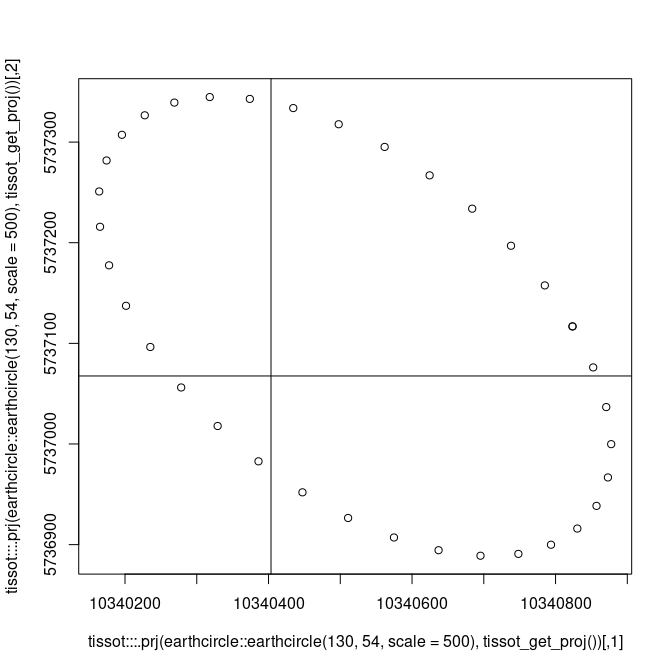
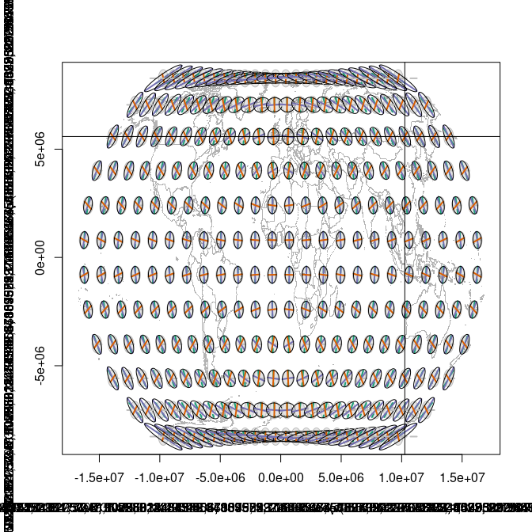
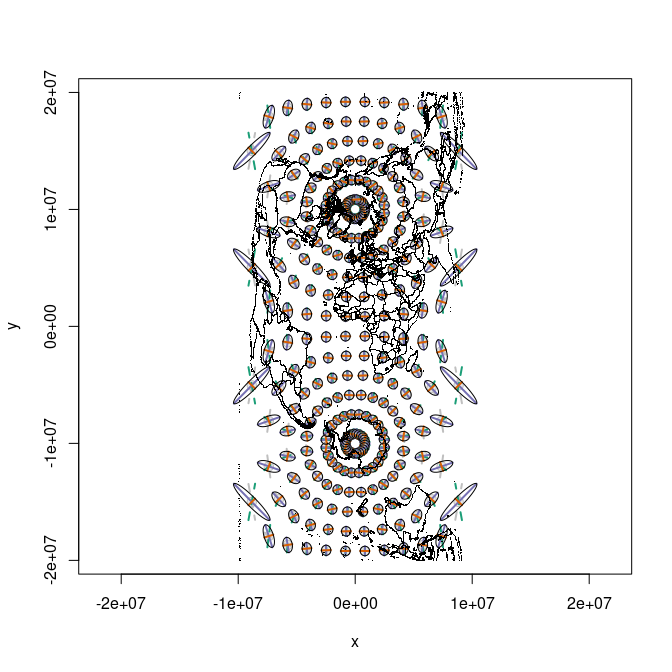

The Tissot Indicatrix is used to characterize local distortions within map projections.
I have derived the code in this package (with permission) from Bill Huber’s wonderful online answer here:
Also see
https://gis.stackexchange.com/questions/5068/how-to-create-an-accurate-tissot-indicatrix
Minimal example
library(tissot)
# NAD 27 in
# World Robinson projection out
r <- tissot(130, 54,
proj.in= "EPSG:4267",
proj.out= "ESRI:54030")
i0 <- indicatrix(r, scale=10^4, n=71)
plot(i0)
tissot_map(add = FALSE)
#> Error detected, some values Inf (error code: -20)
#>
#> ' tolerance condition error
#>
#> '
i1 <- indicatrix(r, scale=10^6, n=71)
plot(i1, add = T)
tissot_abline(130, 54)
#> assuming WGS84 for unprojected angular coordinates
Since an original port of whuber’s code we have now made it much easier to create many indicatrixes and plot them in one step. Or we can still just grab one and plot it on its own. Note that the scale is quite different in these plots.
x <- seq(-172.5, 172.5, by = 15)
y <- seq(-82.5, 82.5, by = 15)
xy <- expand.grid(x, y)
r <- tissot(xy,
proj.in= "OGC:CRS84",
proj.out= "+proj=robin")
j <- which.min(abs(135 - r$lon) + abs(54 - r$lat))
i <- indicatrix0(r[j, ], scale= 1e4, n=71)
plot(i, add = FALSE)
ii <- indicatrix(r, scale=4e5, n=71)
tissot_map(add = FALSE)
#> Error detected, some values Inf (error code: -20)
#>
#> ' tolerance condition error
#>
#> '
plot(ii, add = TRUE)
tissot_abline(xy[j, 1], xy[j, 2])
#> assuming WGS84 for unprojected angular coordinates
Mollweide.
m <- tissot(xy,
proj.in= "OGC:CRS84",
proj.out= "+proj=moll")
plot(indicatrix(m, scale=4e5, n=71), add = FALSE)
tissot_map()
Eckhert III
e <- tissot(xy,
proj.in= "OGC:CRS84",
proj.out= "+proj=eck3")
plot(indicatrix(e, scale=4e5, n=71), add = FALSE)
Equidistant
aeqd <- tissot(xy,
proj.in= "OGC:CRS84",
proj.out= "+proj=aeqd")
plot(indicatrix(aeqd, scale=4e5, n=71), add = FALSE)Cassini-Soldner (spherical because ellipsoidal seems broken)
xx <- tissot(xy,
proj.in= "OGC:CRS84",
proj.out= "+proj=cass +R=6378137")
plot(indicatrix(xx, scale=4e5, n=71), add = FALSE)
points(tissot_map(col = "transparent"), pch = ".")
Sinusoidal
s <- tissot(xy,
proj.in= "OGC:CRS84",
proj.out= "+proj=sinu")
plot(indicatrix(s, scale=3e5, n=71), add = FALSE)
tissot_map()Polar example
p <- tissot(xy[xy[,2] < -30, ],
proj.in= "OGC:CRS84",
proj.out= "+proj=stere +lon_0=147 +lat_ts-71 +lat_0=-90 +datum=WGS84")
plot(indicatrix(p, scale = 3e5))
tissot_map()
tissot_abline(147, -42)
#> assuming WGS84 for unprojected angular coordinates
laea <- tissot(xy[xy[,2] < 20, ],
proj.in= "OGC:CRS84",
proj.out= "+proj=laea +lon_0=147 +lat_0=-90 +datum=WGS84")
plot(indicatrix(laea, scale = 3e5))
Oblique Mercator
You get the idea … many projections need extra attention for real data.
mp0 <- do.call(cbind, maps::map(plot = FALSE)[1:2])
omerc <- "+proj=omerc +lonc=147 +gamma=9 +alpha=9 +lat_0=-80 +ellps=WGS84"
mp <- tissot:::.prj(mp0, omerc, proj.in = "OGC:CRS84")
o <- tissot(xy,
proj.in= "OGC:CRS84",
proj.out= omerc)
plot(indicatrix(o, scale = 3e5))
lines(mp)
VicGrid
vgrid <- "+proj=lcc +lat_1=-36 +lat_2=-38 +lat_0=-37 +lon_0=145 +x_0=2500000 +y_0=2500000 +ellps=GRS80 +towgs84=0,0,0,0,0,0,0 +units=m +no_defs"
mp <- tissot:::.prj(mp0, vgrid, proj.in = "OGC:CRS84")
v <- tissot(as.matrix(expand.grid(seq(120, 165, by =5 ),
seq(-45, -35, by = 5))),
proj.in= "OGC:CRS84",
proj.out= vgrid)
plot(indicatrix(v, scale = 2e5))
lines(mp)
UTM Zone 54 (Hobart)
utm <- "+proj=utm +zone=54 +south"
mp <- tissot:::.prj(mp0, utm, proj.in = "OGC:CRS84")
u <- tissot(as.matrix(expand.grid(seq(108, 162, by =6 ),
seq(-65, 55, by = 15))),
proj.in= "OGC:CRS84",
proj.out= utm)
plot(indicatrix(u, scale = 2e5))
lines(mp)Code of Conduct
Please note that the tissot project is released with a Contributor Code of Conduct. By contributing to this project, you agree to abide by its terms.